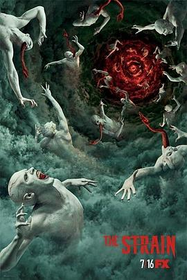

血族 第四季 / The Strain Season 4
又名：血变(港) / 嗜血菌株
结局还是很仁慈的，欣慰；这一集最后还真是熊孩子拯救世界
作品信息
| 导演 | J·迈尔斯·戴尔 / 凯文·唐林 / 诺维托·巴尔瓦 / 托马斯·卡特 / 帕科·卡贝萨斯 / 詹妮弗·林奇 |
| 编剧 | 吉尔莫·德尔·托罗 / 查克·霍根 / 卡尔顿·库斯 |
| 主演 | 寇瑞·斯托尔 / 大卫·布拉德利 / 凯文·杜兰 / 乔纳森·海德 / 理查德·塞梅尔 / 米格尔·戈麦斯 / 麦克斯·查尔斯 / 露塔·格德米纳斯 / 鲁伯特·彭利-琼斯 / 罗宾·阿特金·唐斯 / 娜塔莉·布朗 / 克里斯·柯林斯 / 蓝宝·桑·法兰克斯 / 罗娜·迈特拉 / 安吉尔·帕克 |
| 类型 | 剧情 / 惊悚 / 恐怖 |
| 制片国家/地区 | 美国 |
| 语言 | 英语 |
| 首播 | 2017-07-16(美国) |
| 季数 | 4 |
| 集数 | 10 |
| 单集片长 | 45分钟 |
| IMDb | tt6101544 |
说过什么
2018-02-04 08:42:18
看过 · 时间来自广播，短评来自标记页
结局还是很仁慈的，欣慰；这一集最后还真是熊孩子拯救世界
2017-04-27 23:54:08
广播 · 想看
这一集如果熊孩子能拯救世界，我就相信他是隐藏的真正主角
最后一次看到是 2026-08-01T11:06:09+10:00 · 豆瓣原页